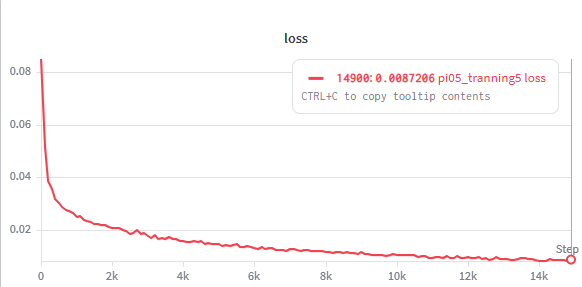
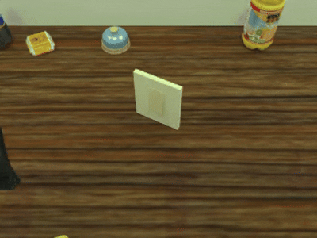
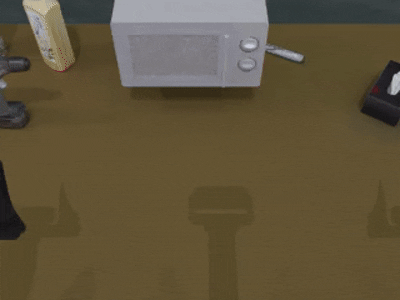

π0.5 VLA Post-Training &
Real-Robot Deployment
Overview
Within our group's research on bimanual VLA, I built a complete pipeline covering teleoperation data collection → model training → real-robot deployment, providing the research infrastructure that enables embodied-model experiments on two robot embodiments of the lab: the Piper and the JAKA S5 dual-arm platforms.
The pipeline spans the full loop from demonstration data to fine-tuning, deployment, and real-robot evaluation, and was used both for collecting training data and for validating learned policies in the real world.


Teleoperation Data Collection System
I developed the VR-based bimanual teleoperation system from scratch. It streams 14-DoF bimanual robot states (two 6-DoF arms + two 1-DoF grippers) in both joint space and Cartesian space, together with three RGB-D camera streams (one global view + two wrist-mounted views) for observation.
Hardware Setup
Teleoperation: Meta Quest 3 (VR)
Cameras: Intel RealSense D435 (RGB-D)
Robots: Songling Piper X · JAKA S5
Recorded Data
State: 14-DoF bimanual states, joint + Cartesian space
Observation: 3× RGB-D streams (global + 2× wrist)

π0.5 LoRA Post-Training
I performed LoRA post-training of the π0.5 VLA model on the collected teleoperation demonstrations (batch size 32, 15k training steps). The training loss converges steadily to below 0.01, indicating that the policy reliably fits the demonstration data across the bimanual tasks.

Real-Robot Deployment & Embodiment Adaptation
I deployed the post-trained policy for closed-loop real-robot execution on both the Piper and JAKA S5 bimanual platforms, building the complete on-robot chain with ROS2: RGB-D streaming, model inference, and arm control.
To support two embodiments, I adapted the deployment to their differences in kinematic structure, coordinate frames, and control interfaces, bridging the VLA policy output into the low-level controllers — understanding the coupling between every layer of the learning algorithm and the physical system.

RoboTwin Simulation Benchmark
I set up the RoboTwin dual-arm simulation benchmark for evaluation. The post-trained π0.5 policy achieves a 85.8% average success rate across 50 randomized tasks under the Pose-VLA protocol.

